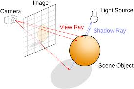
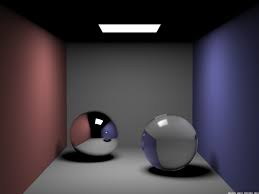
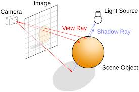
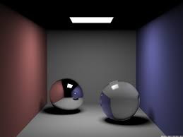

Overview
In computer graphics, ray tracing is a technique for calculating the color of a virtual pixel of an image by calculating the effects of light rays (coming from a virtual light source) on that particular pixel. A ray tracing algorithm involves tracing a path from some imaginary "eye" to each pixel of the image, and calculating the color of that pixel based on what object it represents, that object's properties, and its position relative to the eye and light source.
 


